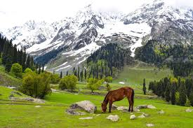

One of the most incredible places in India, Kashmir is known for its natural beauty and is thus, rightly called Heaven on Earth.
With its picturesque lakes, lush fruit orchards, verdant meadows, pines and deodars forests, all enclosed with mountains of Himalayan and Pir-Panjal ranges – Kashmir seems to have directly made its way right out from a postcard.
The beautiful Kashmir Valley is home to many destinations ideal for nature lovers, family vacationers, honeymooners, and even a group of friends.
Along with great sightseeing opportunities, it offers adventure activities like trekking, skiing, and river rafting, recreational activities like fishing & angling, and even spa & wellness. Shopaholics and food lovers can also have their share of enjoyment as Kashmir spoils them with many options.
Price:4000 per head

Top Attractions in Kashmir

Things to Do in KASHMIR